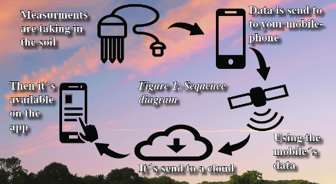
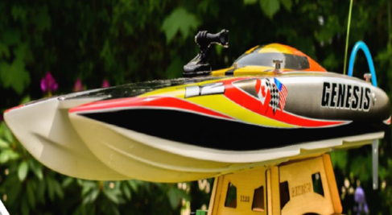
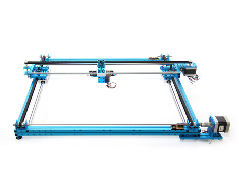
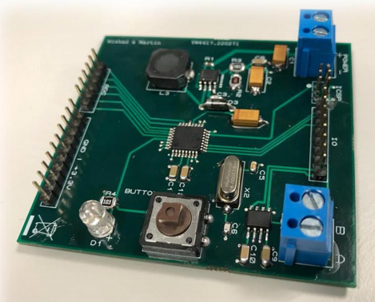

Nick Andersen
I am passionate about new technologies, new ideas and new ways of thinking. I enjoy nothing more than learning the trends that technology is taking in order to work more efficiently and see progress and success. It takes a strong combination of dedication, passion, and efficiency to create a new product. Efficiency is huge to me, and I have a passion for finding new and more productive ways to reach goals. I love seeing the big picture mapped out for technology needs. Mapping out the technological solutions for the future is an important way to ensure efficiency is reached in every process possible.


Designing RF Developing board using EAGLE. The four layer PCB is with STM32 Ultra low power microcontroller, and is designed to run with 5V USB or with 3.6V lithium battery. The board is with integrated Quectel BG96 module which is cabable of using mobile network and GPS.

Involve in developing and planning from an idea to product. The device takes four different measurements (Temperature, Electro conductivity, Moisture, pH) from the soil and adds a geotag to the spot. The app can visualize the position data on a map which makes it possible to track areas of the fields. The project has been presented at the IoT week exhibition fair in 2019 Aarhus, Denmark.

RC boat with a function of return home. Using Arduino as a microcontroller, GPS for positioning and compass to calculate the heading makes the boat to return home (save point) with a circumference precision range of 4 meters.

Writing the algorithm on Arduino platform for a two-axial drawing plotter which can read G code sent through a serial port in order to move the pen to the desired position.

Four layers PCB design for the developing board using Proteus ARES and AVR microcontroller.

Using CAD software (fusion 360) for designing the spider model. The testing parts are printed in a 3D printer using PLA material.